Self-study web lesson. Read, think, answer, then open the hidden answer.
Main idea
Technology is not magic. It is a chain of small steps.
Removed from student page
Teacher intro, self-introduction, group work, and classroom AI rule are omitted.
Image order checked
All content images are used once in the marked order.
Lesson map
- The Island Game
- Remote Island
- Travel Back to Ancient Times
- Step 1–5: Nature, Fire, Tools, Clay, Furnace
- Stone Tools
- Clay and Pottery Kiln
- Step 6–9: Copper, Bronze, Better Tools, Lever and Wheel
- Copper Ore
- Tin Ore
- Alloys: Combining Materials
- Molten Metal and Casting
- Lever
- Simple Machines
- Many Years Later: Steam Engine
- Steam Engine Visual
- Even Later: Electric Motor
- Electric Motor Functioning
- Technology Is Not Magic
- Why We Cannot Start from Computers
- Why Do We Study Technology Before Computers?
- From Simple Ideas to Medical IT Systems
- Find the Chain
Part 1 — Imagination: one task, two possible stories
This is a self-study lesson. First, imagine the situation and think. Do not rush to the final course answer.
You may imagine a remote island, or travel back to ancient times. It is one learning activity in two possible forms.
The Island Game
A beautiful but difficult situation: you know modern life, but you do not have modern technology.
Imagine that you are a modern person from the 21st century. You know computers, hospitals, electricity, machines, and the internet.
Now you are in another world. You may imagine a remote island. Or you may imagine that you travelled back to ancient times.
In both cases, you have your knowledge, but you do not have modern tools, factories, electricity, or computer parts. You have people, nature, your hands, and your brain.
Think and answer
Choose one story. What natural things can you see around you? Write 3–5 things.
Show answer
Possible useful things: stone, wood, water, soil, clay, plants, animals, fire, food, and shelter. Different answers are okay.
Remote Island
This is one possible story. It helps us think about natural materials and limits.
A remote island has nature, people, and simple resources. It may have stone, wood, water, soil, clay, plants, and animals.
But it does not have factories, power stations, ready-made wires, computers, or machine tools.
This means the first steps must be possible with simple materials.
Think and answer
What is more realistic at the beginning: a stone tool or a computer?
Show answer
A stone tool is more realistic because stone and wood are available. A computer needs many earlier technologies.
Travel Back to Ancient Times
This is the second possible story. It shows that knowledge alone is not enough.
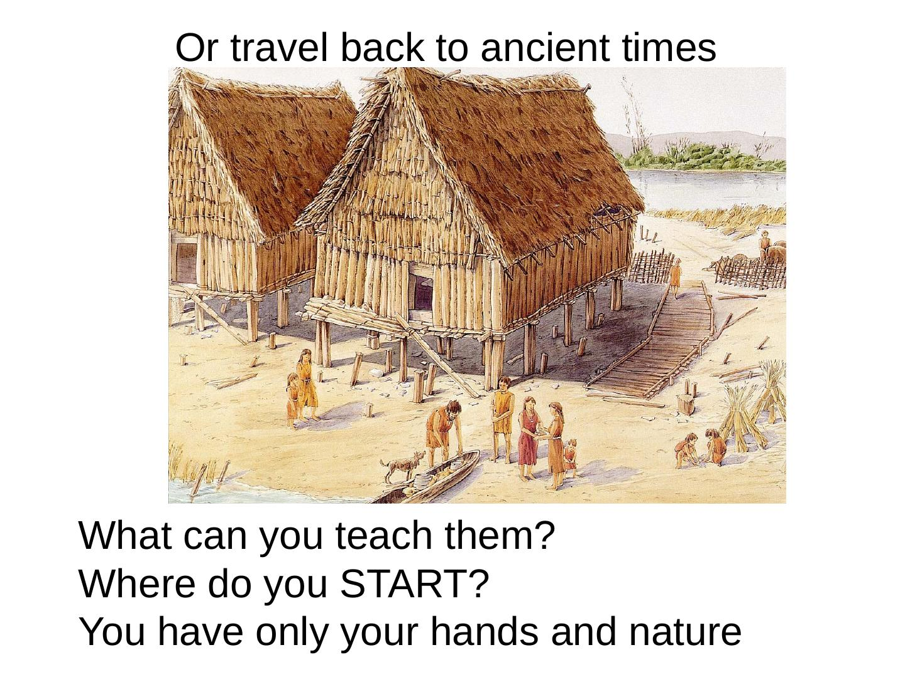
If you travel back to ancient times, you may know many modern ideas: computers, motors, medicine, electricity, and the internet.
But knowledge alone cannot build a modern device. To build something real, you need materials, tools, heat, precision, and time.
So both stories teach the same engineering lesson: start from what is possible now.
Think and answer
If you know about computers, can you immediately build one in ancient times?
Show answer
No. You also need electricity, metal processing, wires, tools, glass, circuits, precise parts, and many earlier technologies.
Part 2 — The full chain of technology development
Now we follow the chain carefully. This part comes before the explanation of why the course studies technology before computers.
The key rule is: do not skip steps.
Step 1–5: Nature, Fire, Tools, Clay, Furnace
The first steps are simple, but they make later technology possible.
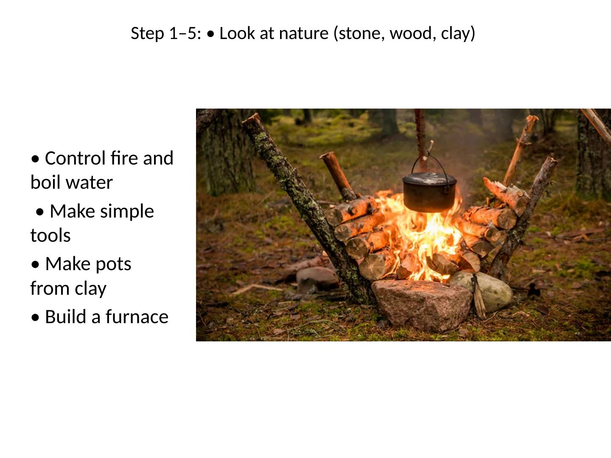
Step 1: look at nature. People start from stone, wood, water, soil, and clay.
Step 2: control fire and boil water. Fire gives heat and cooking. Boiling water and simple hygiene can save lives.
Step 3: make simple tools. Stone and wood can become knives, hammers, sticks, digging tools, and cutting tools.
Step 4: make pots from clay. Containers allow people to store water, food, and materials.
Step 5: build a furnace. A furnace gives higher and more controlled temperature.
Think and answer
Why is the furnace a key step?
Show answer
Because it gives higher and more controlled temperature, so people can process materials better and later work with metals.
Stone Tools
Tools increase human ability.
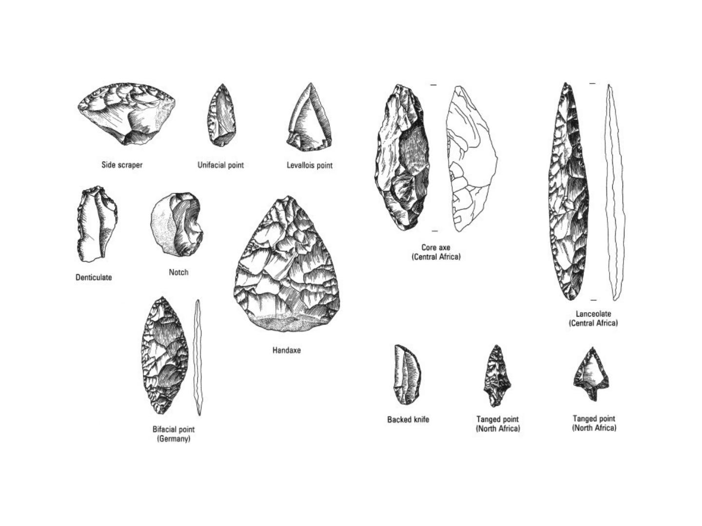
Stone tools are simple, but they are a huge step. A sharp stone can cut. A heavy stone can hit. A shaped stone can become a tool.
Tools make human work stronger, faster, and more precise.
With tools, people can make better tools later.
Think and answer
What does a tool do for human work?
Show answer
It increases human ability: cutting, hitting, digging, building, and shaping materials.
Clay and Pottery Kiln
Clay technology creates containers and prepares furnace technology.
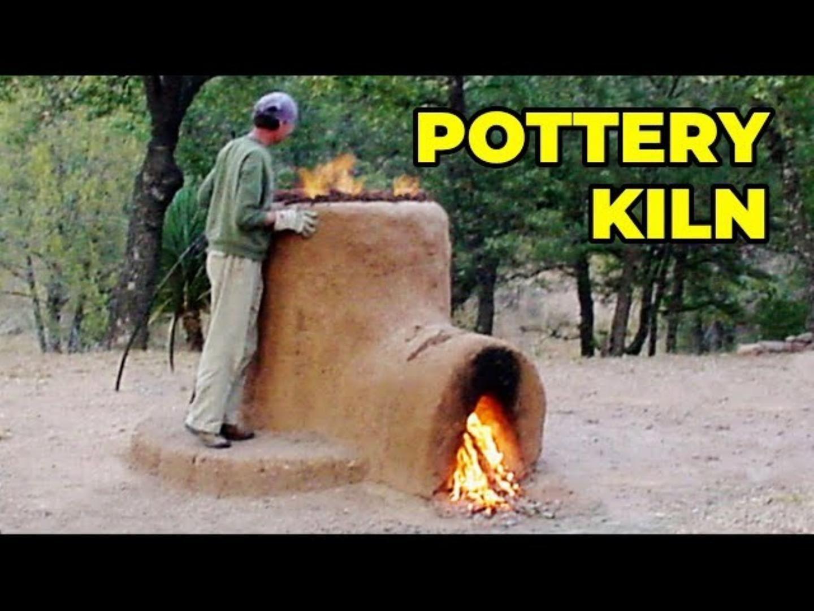
Clay can be shaped, dried, and heated. After heating, it becomes harder.
Clay pots help store water and food. Storage is important because people can plan for the future.
Clay and heat also prepare the idea of a furnace.
Think and answer
Why is storage important?
Show answer
Storage helps keep water and food and allows people to plan for future needs.
Step 6–9: Copper, Bronze, Better Tools, Lever and Wheel
Better materials create better tools. Better tools create better machines.
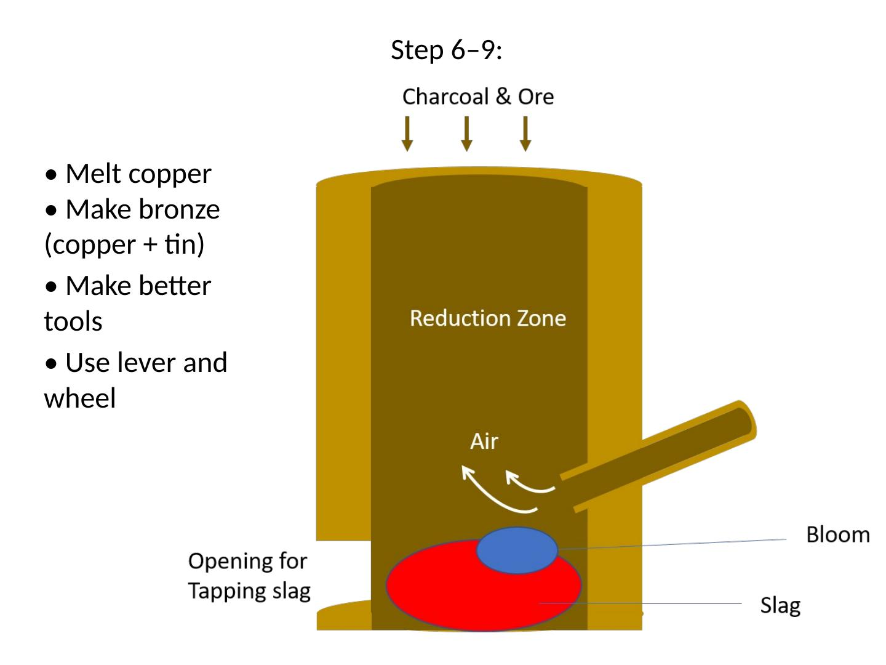
Step 6: melt copper. Copper is one of the first useful metals because it can be shaped and melted.
Step 7: make bronze. Copper plus tin makes bronze. Bronze is stronger and harder than copper.
Step 8: make better tools. Better tools help people cut, build, farm, repair, and make new objects.
Step 9: use lever and wheel. Simple machines help people use force and motion more effectively.
Think and answer
Why is bronze a major step after copper?
Show answer
Because bronze is stronger and harder than copper, so tools become more useful and durable.
Copper Ore
Metal technology starts with finding and processing ore.
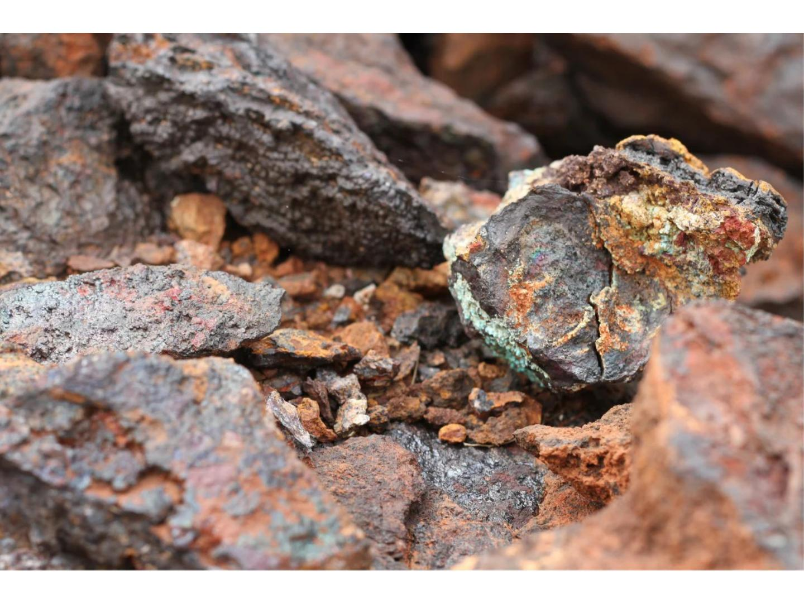
Copper does not appear as a perfect tool. People must find ore, heat it, experiment, fail, and try again.
This is another important engineering idea: progress needs experiments.
Think and answer
Why is ore not the same as a finished tool?
Show answer
Ore is raw material. It must be processed with heat and tools before it can become useful metal.
Tin Ore
Tin matters because it helps make bronze.
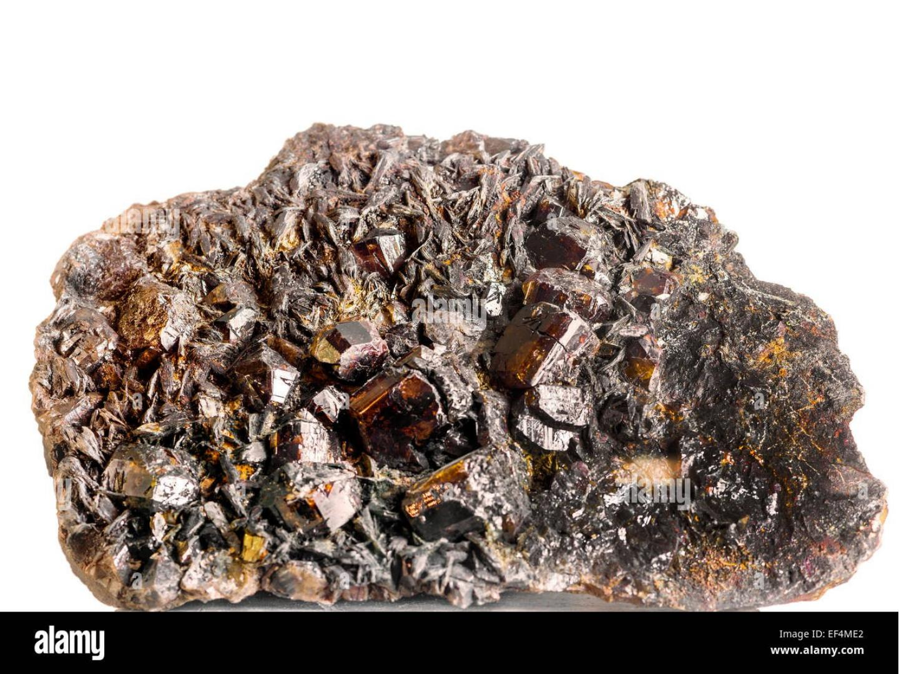
Copper alone is useful, but relatively soft. Tin helps solve this problem.
When copper is combined with tin, the result is bronze.
This is an early example of improving properties by combining materials.
Think and answer
What do we get when we combine copper and tin?
Show answer
Bronze. It is usually stronger and harder than copper.
Alloys: Combining Materials
New properties can come from combining known materials.
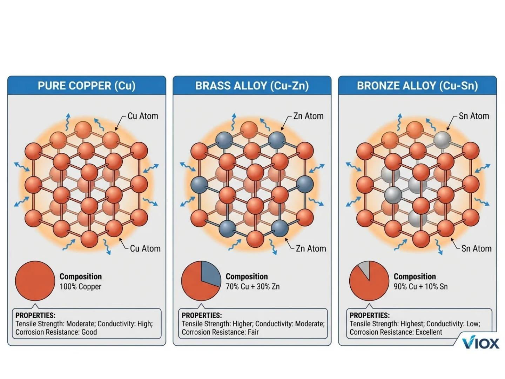
The diagram shows that different atomic arrangements give different material properties.
Pure copper, brass, and bronze are not the same. Their properties change because their composition changes.
This prepares the later lecture about materials, alloys, strength, hardness, and toughness.
Think and answer
What is the simple idea of an alloy?
Show answer
An alloy is a mixture of metals or elements that gives useful properties.
Molten Metal and Casting
Controlled heat makes metal shaping possible.
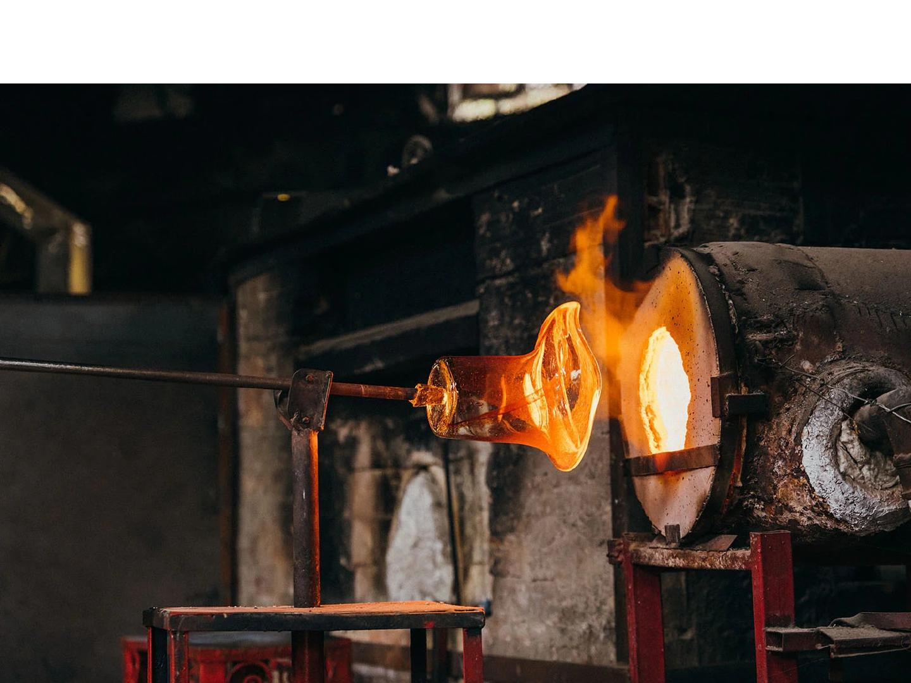
When metal becomes liquid, it can be poured into a mold.
This allows people to make stronger and more complex parts.
Metal casting is a big bridge from simple tools to more advanced machines.
Think and answer
Why is casting useful?
Show answer
Because liquid metal can be shaped in molds to create useful parts.
Lever
A lever helps move or lift heavy objects.
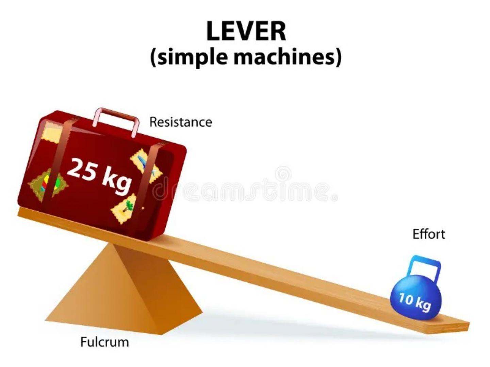
A lever is a simple machine. It does not create energy.
It changes how force is used. With a lever, a smaller effort can move a heavier load if the distances are arranged correctly.
This idea will return later in mechanics.
Think and answer
Does a lever create energy?
Show answer
No. It helps us use force more effectively.
Simple Machines
Simple machines are the beginning of mechanical thinking.
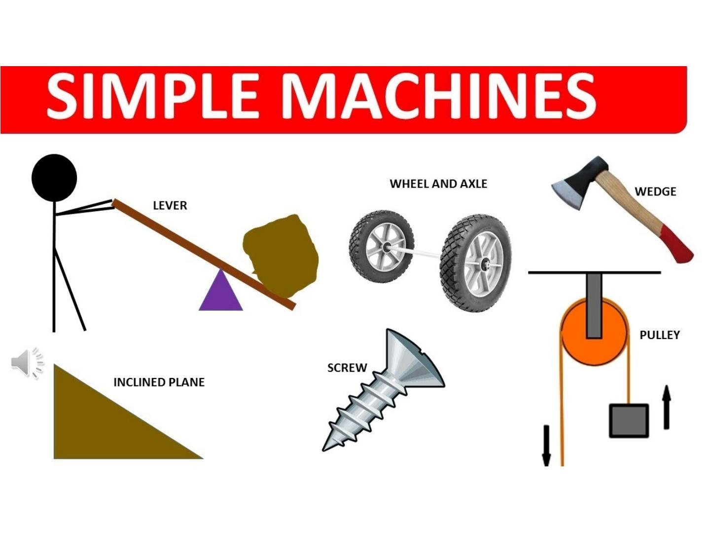
Simple machines include lever, wheel, pulley, screw, wedge, and inclined plane.
They help people lift, move, cut, hold, and transport things.
In hospitals, many devices still use simple mechanical principles.
Think and answer
Name one simple machine.
Show answer
Examples: lever, wheel, pulley, screw, wedge, inclined plane.
Many Years Later: Steam Engine
Heat can become motion.
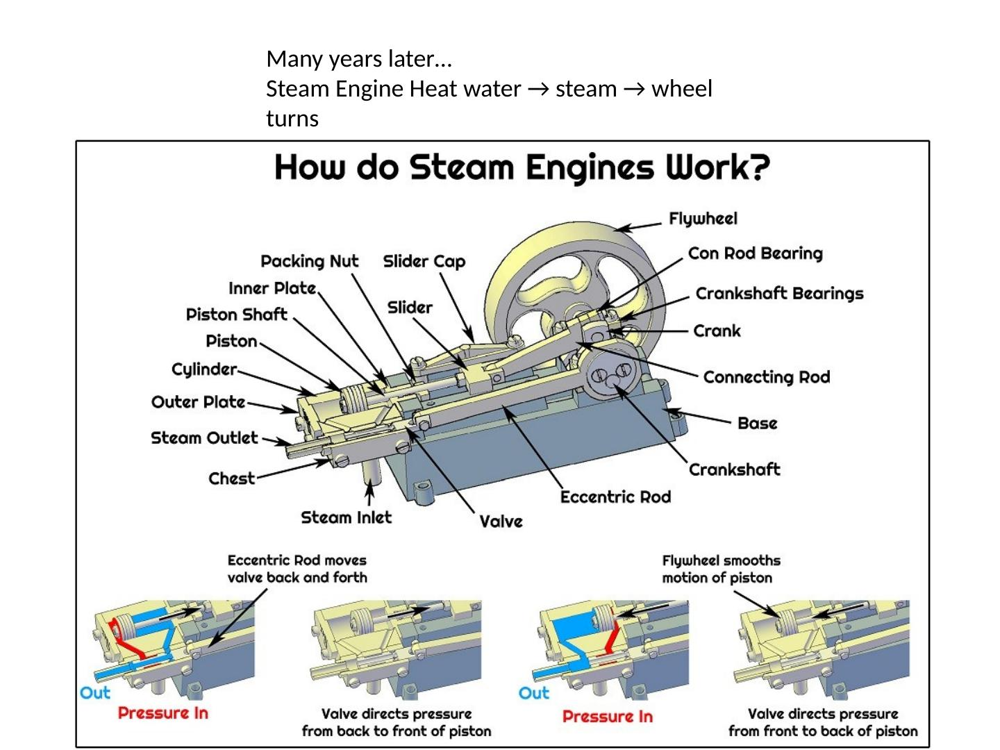
Much later, people learned to use heat in powerful machines.
In a steam engine, heat boils water and creates steam. Steam pressure pushes mechanical parts. Motion turns a wheel.
This engine is a late step. It needs metal, tools, sealed parts, pressure control, and mechanical design.
Think and answer
What is the basic chain in a steam engine?
Show answer
Heat → steam pressure → mechanical motion → wheel turns.
Steam Engine Visual
The picture shows a real mechanical system.
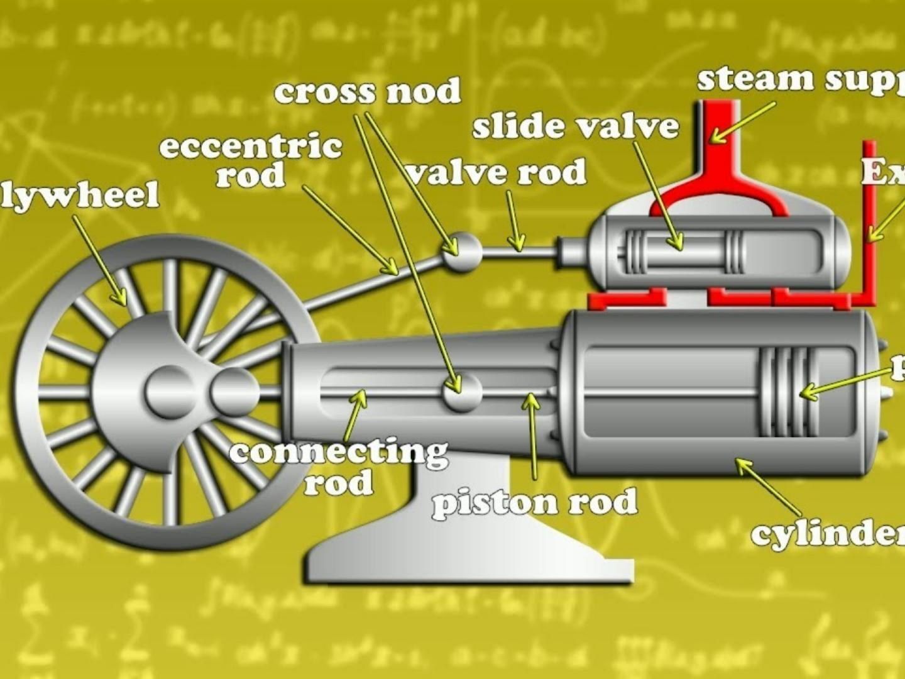
A steam engine is not only one idea. It is a system of boiler, steam, pressure, valves, piston, connecting rod, and wheel.
This shows how many earlier technologies must work together.
Think and answer
Why is a steam engine impossible as the first step?
Show answer
Because it needs metal parts, precise construction, sealed pressure, and good heat control.
Even Later: Electric Motor
Electricity and magnetism can create movement.
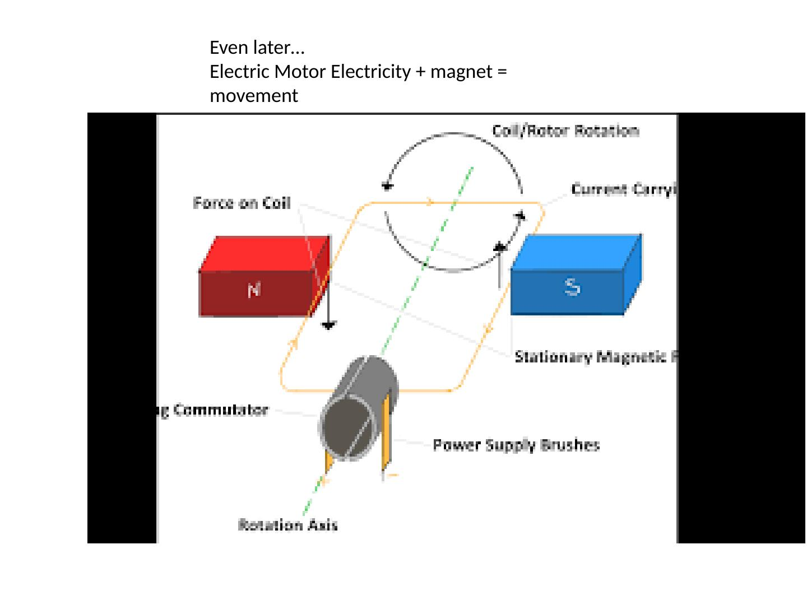
Even later, people learned to use electricity and magnetism.
An electric motor changes electrical energy into mechanical motion.
Motors are used in fans, pumps, elevators, hard drives, and medical equipment.
Think and answer
What does an electric motor change?
Show answer
It changes electrical energy into mechanical motion.
Electric Motor Functioning
A motor also depends on earlier technologies.
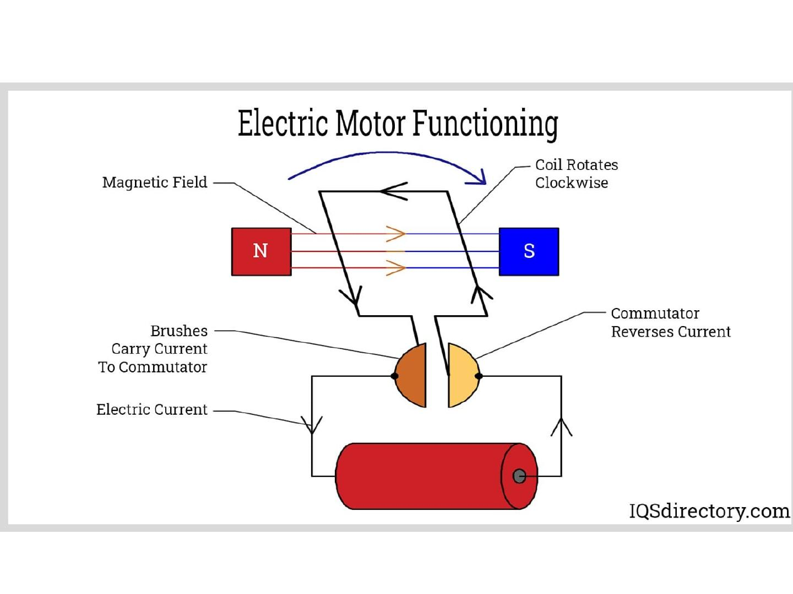
A motor needs wires, magnets, metal parts, insulation, bearings, power supply, and control.
So even an electric motor is not magic. It is a system built from earlier steps.
Think and answer
Name one earlier technology needed for an electric motor.
Show answer
Examples: copper wire, magnets, metal parts, insulation, electricity, tools.
Technology Is Not Magic
Complex technology stands on many earlier steps.
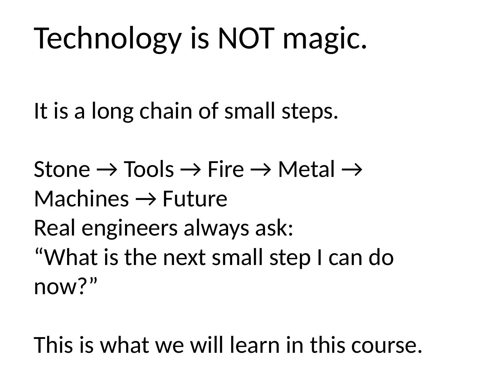
Now we can see the full idea. Technology is not magic.
Stone becomes tools. Fire helps materials. Clay helps storage and furnaces. Furnaces help metals. Metals help machines. Machines help engines. Electricity helps motors and computers.
This is the real answer to the imagination game: modern systems are late steps. They stand on many earlier steps.
Think and answer
What is the main idea of this chain?
Show answer
We cannot skip steps. Complex technology depends on many earlier technologies.
Part 3 — Answer to the Game: Why We Study Technology Before Computers
Now the course explanation finally makes sense.
This is Computer Fundamentals, but we started with nature, materials, tools, machines, and energy because computers are late steps in a long technological chain.
Why We Cannot Start from Computers
A computer is not the first step. A computer is a late step.
Many students may want to start from computers, the internet, or modern medical machines.
But after the full chain, we understand the problem. To build a computer, we need materials, tools, energy, electricity, machines, knowledge, and time.
Before computers, humans needed materials, fire, tools, furnaces, metals, machines, engines, and electricity.
Think and answer
Why can we not build a computer first on the island or in ancient times?
Show answer
Because a computer needs clean materials, metal processing, wires, tools, electricity, precision parts, and a long chain of earlier technologies.
Why Do We Study Technology Before Computers?
Computers are part of a larger technological system.
This subject is called Computer Fundamentals. So why do we talk about materials, machines, energy, electricity, and hospital equipment?
Because computers are not alone. In hospitals, computers work together with monitors, pumps, beds, scanners, refrigerators, air conditioners, backup power systems, networks, and old machines.
If you only know software names, real equipment can feel frightening. But if you understand basic principles, you can think calmly.
Think and answer
In a hospital, is a computer only a screen and keyboard?
Show answer
No. A hospital computer system is connected to devices, sensors, electricity, networks, cooling, people, and safety rules.
From Simple Ideas to Medical IT Systems
Simple ideas first. Complex systems later.
This course follows the same logic as the technology chain.
We study how technology develops step by step. Then materials and their properties. Then mechanics and simple machines. Then energy, heat, engines, electricity, motors, medical equipment, and finally computer systems.
This will help you understand hospital technology and not be afraid of equipment.
Think and answer
What is the main rule of this course?
Show answer
Simple ideas first, complex systems later. We understand the chain step by step.
Find the Chain
Use the thinking tool from this lesson.
Choose one modern thing: a computer, a hospital monitor, an MRI scanner, a refrigerator, or a mobile phone.
Write the earlier technologies needed before it can exist. Start from simple materials and move step by step.
The goal is not a perfect history. The goal is to think in chains, not isolated objects.
Think and answer
Example: what chain is needed before a hospital computer can work?
Show answer
Materials → tools → metal processing → electricity → wires → circuits → computer hardware → software → network → hospital system.
{kind=link}